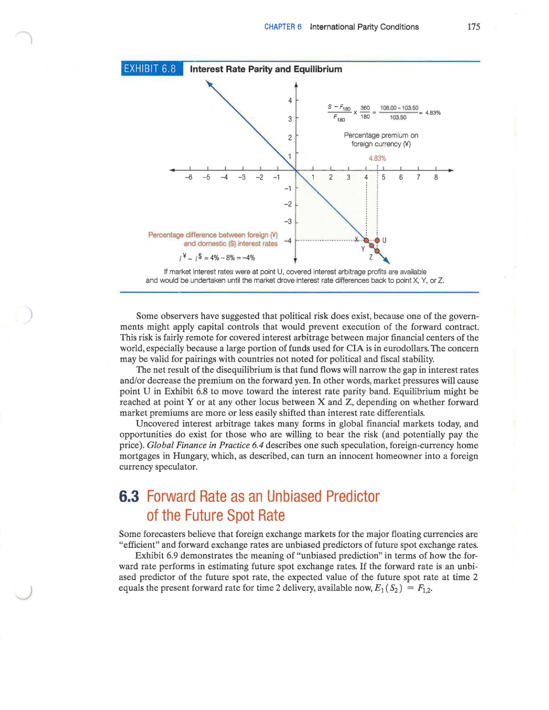

Chapter 6 - International Parity Conditions
6 Introduction
Random Quote: The same boiling water that softens a potato hardens an egg. It’s not the circumstances, it’s what you are made of.
Scripture: “Two people owed money to a certain moneylender. One owed him five hundred denarii, and the other fifty. Neither of them had the money to pay him back, so he forgave the debts of both. Now which of them will love him more?” Simon replied,“I suppose the one who had the bigger debt forgiven.” “You have judged correctly,” Jesus said. Luke 7:41-43
Question: If you have a little sin and I have a lot, what does forgiveness cost?
Random Quote: Markets dislike free lunches. If one appears, someone will eat it quickly.
“If capital freely flowed towards those countries where it could be most profitably employed, there could be no difference in the rate of profit, and no other difference in the real or labour price of commodities, than the additional quantity of labour required to convey them to the various markets where they were to be sold.”— David Ricardo, On the Principles of Political Economy and Taxation, 1817, Chapter 7
Chapter 6 asks two of the most important questions in international finance: What determines exchange rates, and can exchange rate changes be predicted? The chapter answers those questions through the logic of the international parity conditions, the set of relationships linking prices, inflation, interest rates, forward rates, and spot exchange rates.
This is one of the most important theory chapters in the course. It provides the framework needed for foreign exchange pricing, hedging, arbitrage, speculation, and currency valuation. These parity conditions do not line up perfectly with real-world data in every period, especially in the short run, but they remain the benchmark structure managers and analysts use when interpreting currency markets.
Chapter Roadmap
Major sections:
- Prices and Exchange Rates - How goods prices, inflation, and competitiveness connect to currency values.
- Interest Rates and Exchange Rates - How interest rates embed inflation expectations and interact with forward markets.
- Forward Rate as an Unbiased Predictor - Whether the forward rate is just a pricing relationship or also a forecast.
- Prices, Interest Rates, and Exchange Rates in Equilibrium - How the major parity conditions fit together as one integrated system.
Learning Objectives
By the end of this chapter, we should be able to:
- Examine how price levels and price level changes (inflation) in countries determine the exchange rates at which their currencies are traded
- Show how interest rates reflect inflationary forces within each country and drive currency exchange rates
- Explain how forward markets for currencies reflect expectations held by market participants about the future spot exchange rate
- Analyze how, in equilibrium, the spot and forward currency markets are aligned with interest differentials and differentials in expected inflation
6.1 Prices and Exchange Rates
The economic theories that link exchange rates, price levels, and interest rates are called international parity conditions.
The first major building block of international parity is the relationship between goods prices and currency values. If competitive markets function across countries, exchange rates should eventually reflect differences in the prices of comparable goods and services.
Core intuition: if the same good is materially cheaper in one country than another after adjusting for the exchange rate, then arbitrage, substitution, or competitive pressure should push that gap toward closure. That is the basic logic of the law of one price and purchasing power parity.
6.1.1 Purchasing Power Parity and the Law of One Price
Basic idea: identical goods should have identical prices once those prices are translated into a common currency, provided markets are competitive and frictions are minimal.
The law of one price (LOOP) states that if an identical product or service can be sold in two different markets, and there are no restrictions on sale or transport and no meaningful transaction costs, then the product should sell for the same price in both markets once prices are expressed in a common currency.
In notation, if the price of a product in the United States is denoted by p-dollar times the Yen Spot rate, and the price in Japan is denoted by p-yen, then the prices should satisfy:
\[ p_{\$} \times S_{\yen = \$1.00} = p_{\yen} \]
Rearranging gives the exchange rate implied by relative goods prices:
\[ S_{\yen = \$1.00} = \frac{p_{\yen}}{p_{\$}} \]
This leads directly to purchasing power parity (PPP). If the law of one price were true for all goods and services, the exchange rate implied by the prices of identical baskets of goods would be the equilibrium exchange rate.
Purchasing Power Parity says that the same good in different countries should cost the same amount after converting currencies, or at least eventually.
6.1.1.1 Absolute Purchasing Power Parity
Absolute PPP: the spot exchange rate should equal the ratio of price levels in two countries.
The absolute version of PPP states that the spot exchange rate is determined by the relative prices of similar baskets of goods in two countries.
In other words:
\[ S = \frac{PI_{foreign}}{PI_{domestic}} \]
Absolute PPP is easiest to understand with the Big Mac Index. (The international magazine “The Economist” created this index.) If a Big Mac is viewed as roughly the same product worldwide, then the price of a Big Mac in local currency compared with the U.S. price suggests a PPP-implied exchange rate.
For example, the textbooks’s illustration uses China and the United States. In China, a Big Mac costs Yuan 22.4. In the United States, it costs USD 5.66. The PPP-implied exchange rate is therefore:
\[ S_{\text{PPP}} = \frac{CNY 22.4}{USD 5.66} = 3.9576 \text{ yuan per dollar} \]
If the actual market exchange rate is Yuan 6.4751 per dollar, the yuan appears undervalued relative to the dollar because it takes more yuan to buy one dollar than PPP would imply.
The percentage under- or overvaluation is calculated as:
\[ \frac{\text{Implied Rate} - \text{Actual Rate}}{\text{Actual Rate}} \]
So in the China example:
\[ \frac{3.9576 - 6.4751}{6.4751} = -38.9\% \]
That negative value indicates the yuan is about 38.9% undervalued versus the U.S. dollar under this measure.
6.1.1.2 Why the Big Mac Index Is A Strong Example
The Big Mac is:
- highly standardized, a Big Mac is a Big Mac (Google the song);
- the production process is relatively similar across countries (ingredients are the same);
- many of the costs are local, such as labor, rent, and some inputs (it builds in similar costs across borders).
That means the Big Mac price captures something meaningful about domestic price levels.
At the same time, it is not a perfect PPP measure. Big Macs are not tradable across borders, and local taxes, rent, regulation, and wage structures differ from country to country. This is an informative illustration, not as a precise valuation tool, so don’t use it as a forecast.
Absolute PPP says the price of the same product should be the same in every country once we convert currencies, i.e., the exchange rate should equal the ratio of prices between countries.
6.1.2 Relative Purchasing Power Parity
Relative PPP: even if price levels do not line up perfectly today, differences in inflation should still push exchange rates over time.
Relative PPP relaxes the stronger assumptions of absolute PPP. Rather than claiming that the current spot exchange rate must equal the ratio of price levels, it argues that changes in inflation rates between countries should be offset by opposite changes in exchange rates over time.
The statement of relative PPP is:
If the spot exchange rate between two countries starts in equilibrium, any change in the differential rate of inflation between them tends to be offset over the long run by an equal but opposite change in the spot exchange rate.
In approximate form:
\[ \%\Delta S \approx \pi_{foreign} - \pi_{domestic}\\ \]
The economic logic is straightforward. Suppose one country experiences higher inflation than its trading partners, but the exchange rate does not change. That country’s exports become relatively more expensive, and imports become relatively more attractive. Over time, trade pressures should push its currency downward.
This should sound familiar…this is what is happening in the United States today. The USD is inflated, which makes our exports more expensive to other countries, while imports appear cheaper relative to the dollar. Also, the USD has been depreciating during the inflationary period.
6.1.2.1 Numerical Example: Relative Purchasing Power Parity
Suppose we compare the United States and Japan.
The current exchange rate is:
\[ S_0 = 110 \text{ yen per dollar} \]
Assume the following inflation rates:
- U.S. inflation: 5%
- Japan inflation: 2%
Step 1: Apply the Relative PPP Formula
Relative PPP states that the expected percentage change in the exchange rate is approximately equal to the difference in inflation rates between the two countries:
\[ \% \Delta S \approx \pi_{foreign} - \pi_{domestic} \]
For this example:
- Foreign country = Japan
- Domestic country = United States
Therefore,
\[ \% \Delta S \approx 2\% - 5\% \]
\[ \% \Delta S \approx -3\% \]
Step 2: Interpret the Result
A negative value means the exchange rate (S) will fall.
Since (S) is expressed as yen per dollar, a decrease means the dollar depreciates relative to the yen.
This occurs because U.S. inflation is higher, making U.S. goods relatively more expensive.
Step 3: Calculate the New Exchange Rate
Initial exchange rate:
\[ S_0 = 110 \]
Expected percentage change:
\[ -3\% \]
Calculate the change in the exchange rate:
\[ 110 \times 0.03 = 3.3 \]
New exchange rate:
\[ S_1 = 110 - 3.3 \]
\[ S_1 \approx 106.7 \]
Final Result
The exchange rate moves from:
\[ 110 \rightarrow 106.7 \]
Meaning:
\[ 1 \text{ dollar } = 106.7 \text{ yen} \]
The dollar depreciates relative to the yen.
6.1.2.2 Economic Intuition
Because inflation in the United States is higher than in Japan:
- U.S. goods become more expensive
- Japanese goods become relatively cheaper
Consumers shift toward Japanese goods, increasing demand for yen.
Higher demand for yen causes the yen to appreciate and the dollar to depreciate.
Please note: absolute PPP is about price levels; relative PPP is about inflation rates and exchange rate changes.
Relative PPP is looking at the changing of prices over time and says that exchange rates should move with inflation differences over the long run.
If a country’s prices rise faster, its currency should fall.
6.1.3 Empirical Tests of Purchasing Power
What does the evidence say? PPP is more useful as a long-run tendency than as a short-run forecasting rule.
The empirical evidence on PPP is mixed:
- PPP holds up better over the very long run than over short horizons.
- PPP works better in countries with relatively high inflation and underdeveloped capital markets.
Why does PPP often fail in practice, especially in the short run?
- transportation costs are not zero;
- tariffs and trade barriers exist;
- many goods and most services are not perfectly tradable;
- product quality differs across countries;
- consumer tastes differ across countries;
- financial flows can dominate trade flows for long periods.
A haircut provides a useful example. Even if haircuts are more expensive in one city than another, there is no practical arbitrage mechanism that quickly equalizes the two prices internationally.
6.1.4 Exchange Rate Indices: Real and Nominal
Most countries do not trade with just one partner, so a single bilateral exchange rate tells only part of the story. Managers and economists therefore rely on exchange rate indices.
Key distinction: nominal indices track currency movements; real indices adjust for inflation and say more about competitiveness.
6.1.4.1 Nominal Effective Exchange Rate Index
The nominal effective exchange rate index is a trade-weighted average of a currency’s bilateral exchange rates relative to its major trading partners. It tells us how the currency has changed in nominal terms relative to a chosen base year.
6.1.4.2 Real Effective Exchange Rate Index
The real effective exchange rate index adjusts the nominal index for relative price levels or inflation. It therefore speaks more directly to international competitiveness.
In the chapter, the real effective exchange rate index for the U.S. dollar is represented as the nominal effective exchange rate index multiplied by the ratio of U.S. costs to foreign costs.
The core interpretation is this:
- if the real effective exchange rate index equals 100, the currency is at the base-year level of purchasing power;
- if it rises above 100, the currency is relatively overvalued from a competitive perspective;
- if it falls below 100, the currency is relatively undervalued from a competitive perspective.
6.1.4.3 Why Managers Care
A high real effective exchange rate suggests that domestic producers may be losing international competitiveness. A low real effective exchange rate suggests stronger export competitiveness.
That makes the real effective exchange rate useful for:
- export planning,
- sourcing decisions,
- location decisions,
- balance of payments analysis.
6.1.5 Exchange Rate Pass-Through
Exchange rate pass-through measures the extent to which changes in exchange rates show up in the prices of imported or exported goods.
Managerial question: when the currency moves, does the firm change the customer price, absorb the shock in margin, or split the difference?
PPP suggests complete pass-through in the long run, but in practice pass-through is often partial.
For a multinational firm, this question is critical: when the exchange rate changes, does the firm fully change the foreign-currency selling price, or does it absorb some of the change in its margin?
6.1.5.1 Complete versus Partial Pass-Through
The textbook’s Volvo example:
Suppose a Volvo is produced in Belgium at a euro price of:
\[ P_{\text{Volvo}}^{\euro} = 50{,}000 \]
If the spot exchange rate is initially:
\[ S_{\$ = \euro 1.00} = 1.00 \]
then the U.S. dollar price is:
\[ P_{\text{Volvo}}^{\$} = 50{,}000 \times 1.00 = 50{,}000 \]
If the euro appreciates by 20% so that the exchange rate becomes:
\[ S_{\$ = \euro 1.00} = 1.20 \]
then complete pass-through implies the U.S. dollar price rises fully to:
\[ P_{\text{Volvo}}^{\$} = 50{,}000 \times 1.20 = 60{,}000 \]
That is a 20% increase in the U.S. dollar price.
If Volvo instead raises the U.S. price only to USD 58,000, the price rises by 16%, not 20%. That is partial pass-through.
The firm is absorbing part of the exchange rate movement in its margin.
6.1.5.2 Why Partial Pass-Through Occurs
Partial pass-through can occur even in highly competitive markets because:
- firms want to protect sales volume;
- contracts may lock prices in temporarily;
- imported inputs may offset part of the cost change;
- firms may strategically compress margins in important markets.
6.1.5.3 Managerial Meaning
Pass-through is really a pricing strategy question under exchange rate uncertainty. The firm must decide how much exchange-rate risk will be passed on to customers and how much will be absorbed internally.
6.1.5.4 Price Elasticity of Demand
The desired degree of pass-through depends importantly on the price elasticity of demand.
The chapter gives the standard formula:
\[ e_p = \frac{\%\Delta Q_d}{\%\Delta P} \]
If demand is relatively inelastic in absolute value, then higher prices may have little effect on quantity demanded. In that case, a firm can often pass through more of the exchange rate change.
If demand is relatively elastic, a price increase may reduce quantity demanded substantially. In that case, firms may prefer lower pass-through in order to preserve sales.
6.1.5.5 Pass-Through and Emerging Market Currencies
The chapter also connects pass-through to the impossible trinity from Chapter 2. Many emerging markets historically preferred a combination of:
- exchange rate stability,
- monetary independence,
- limited capital mobility.
As countries moved toward greater capital mobility, many gave up more rigid exchange rate pegs. Once exchange rates became more flexible, exchange rate changes began feeding more directly into domestic prices.
This matters because exchange rate pass-through can become a source of inflationary pressure, especially when imported goods become more expensive after currency depreciation.
6.2 Interest Rates and Exchange Rates
The second major building block of parity conditions connects interest rates to inflation expectations and then to exchange rates.
Core idea: interest rates are not just market quotations. They embed expected inflation and are tied to exchange rates through investment choice and arbitrage.
6.2.1 The Fisher Effect
Fisher effect: nominal rates contain both a real return and expected inflation.
The Fisher effect states that nominal interest rates in each country equal the required real rate of return plus compensation for expected inflation.
In exact form:
\[ i = r + \pi + r\pi \]
In approximate form, which is used most often in practice:
\[ i \approx r + \pi \]
where:
- i = nominal interest rate,
- r = real interest rate,
- \(\pi\) = expected inflation.
The cross-product term r\(\pi\) is often dropped because it is small for ordinary rates of return and inflation.
6.2.1.1 Why This Matters
Why do higher interest rates sometimes attract capital and sometimes not. The Fisher effect gives the answer:
- if high nominal rates reflect high expected inflation, investors are not necessarily gaining anything in real terms;
- if high nominal rates reflect high real returns, then those rates can attract capital strongly.
In other words, it really depends on the estimated value of \(\pi\).
6.2.1.2 Important Example
The chapter’s discussion of the United States under Paul Volcker is especially useful. High interest rates in the late 1970s could initially reflect high expected inflation. But once inflation was brought down, the remaining high rates represented high real rates, which attracted capital inflows and strengthened the dollar.
6.2.1.3 Empirical Evidence
The textbook notes that empirical support for the Fisher effect is strongest for short-maturity government securities, where default risk and term risk are lower.
6.2.2 The International Fisher Effect
International Fisher: nominal interest differentials should be offset by expected exchange-rate changes.
The international Fisher effect extends the Fisher logic across countries. It states that the spot exchange rate should change by an amount equal to, but opposite in sign to, the difference in nominal interest rates between two countries.
In approximate form:
\[ \frac{S_1 - S_2}{S_2} \times 100 \approx i_{domestic} - i_{foreign} \]
The intuition is that if one country has a lower interest rate, investors will accept that lower rate only if its currency is expected to appreciate enough to offset the yield disadvantage.
6.2.2.1 Example
If a U.S. investor can buy a dollar bond yielding 6% or a yen bond yielding 4%, the yen must be expected to appreciate by roughly 2% over the relevant horizon for the investor to be indifferent.
If that appreciation does not occur, the lower-yield foreign investment underperforms.
6.2.2.2 Caution
People sometimes jump from “higher interest rate” to “stronger currency.” The international Fisher effect shows why that shortcut is dangerous. A higher nominal interest rate may signal a currency expected to depreciate, not appreciate.
6.2.3 The Forward Rate
A forward rate is an exchange rate agreed upon today for currency transaction that will occur on a future date. Think of it like locking in a price today for something you will buy later. It is not today’s spot rate; it is the contractual rate at which a currency can be bought or sold forward.
Forward rates are central to multinational finance because they allow firms and investors to lock in future exchange rates and help firms eliminate exchange rate risk.
They are rates that make the financial markets balance given interest rates in each country.
Forward Rate Calculation Example: Using a Forward Contract to Hedge Exchange Rate Risk
Consider a U.S. firm that must pay a German supplier in euros one year from today.
Current Market Conditions:
Spot exchange rate:
\[ S_0 = 1.10 \; \text{USD/EUR} \]
This means:
1 EUR = $1.10 USD
A bank quotes a 1-year forward exchange rate of:
\[ F_1 = 1.15 \; \text{USD/EUR} \]
This means that one year from today the firm can exchange dollars for euros at:
1 EUR = $1.15 USD
Payment Obligation
The U.S. firm must pay:
1,000,000 EUR
to the German supplier in one year.
Case 1: No Forward Contract (Exchange Rate Risk)
If the firm does not hedge, it must purchase euros at the future spot rate, which is unknown today.
Suppose the euro appreciates and the future spot rate becomes:
\[ S_1 = 1.30 \; \text{USD/EUR} \]
The dollar cost of the payment would be:
\[ 1{,}000{,}000 \times 1.30 = \$1{,}300{,}000 \]
Cash Flows
| Currency | Cash Flow |
|---|---|
| USD | -$1,300,000 |
| EUR | +€1,000,000 |
The euros are then paid to the supplier.
This outcome exposes the firm to exchange rate risk.
Case 2: Using a Forward Contract (Hedging)
Instead of waiting, the firm signs a forward contract today at the forward rate.
Spot rate today is still:
1 EUR = $1.10 USD
And the forward exchange rate:
\[ F_1 = 1.15 \; \text{USD/EUR} \]
Cash Flows at Contract Maturity
The firm pays dollars to the bank:
\[ -\$1{,}150{,}000 \]
The bank delivers 1,000,000 EUR and the firm then pays the supplier the funds.
Net Cash Flows
| Currency | Cash Flow |
|---|---|
| USD | -$1,150,000 |
| EUR | +€1,000,000 |
| Supplier payment | -€1,000,000 |
Final net position of US Firm:
| Currency | Net Cash Flow |
|---|---|
| USD | -$1,150,000 |
| EUR | 0 |
Interpretation:
By using the forward contract, the firm converts an uncertain future exchange rate into a certain dollar payment.
| Scenario | Dollar Cost |
|---|---|
| No hedge | $1,300,000 |
| Forward hedge | $1,150,000 |
The forward contract eliminates exchange rate risk. In this case, using Forward Contracts saved the US firm $150,000 USD.
Key Insight:
A forward contract allows firms to lock in a future exchange rate today.
This converts uncertain future currency costs into predictable cash flows, allowing firms to hedge exchange rate risk.
The forward rate for a given maturity is determined by the current spot rate and the two relevant money-market interest rates for that maturity.
For the textbook’s Swiss franc example:
- spot rate = SF 1.4800 per USD 1.00,
- 90-day Swiss franc rate = 4.00% per annum,
- 90-day eurodollar rate = 8.00% per annum.
The 90-day forward rate is:
\[ F_{90}^{SF/\$} = S^{SF/\$} \times \frac{1 + i_{SF}\left(\frac{90}{360}\right)}{1 + i_{\$}\left(\frac{90}{360}\right)} \]
Substituting the values:
\[ F_{90}^{SF/\$} = 1.4800 \times \frac{1 + 0.04\left(\frac{90}{360}\right)}{1 + 0.08\left(\frac{90}{360}\right)} = 1.4655 \]
So the forward rate is SF 1.4655 per USD 1.00.
Because the dollar interest rate is higher than the Swiss franc interest rate, the dollar sells forward at a discount, and the Swiss franc sells forward at a premium.
This is a recurring theme throughout the chapter: the forward market reflects interest differentials.
6.2.5 Interest Rate Parity (IRP)
Interest rate parity (IRP) links the foreign exchange market and the money market. It states that the difference in national interest rates for securities of similar risk and maturity should equal, but be opposite in sign to, the forward premium or discount on the foreign currency, ignoring transaction costs.
In plain language: after hedging exchange risk with a forward contract, investors should not earn a free extra return simply by moving from one money market to another.
This is one of the most important relationships in the chapter because it explains why covered international investing does not usually offer persistent free money.
In general form, IRP requires equality between:
- the return on a domestic money market investment, and
- the covered return from converting funds into a foreign currency, investing abroad, and hedging exchange risk with a forward contract.
The chapter’s Swiss franc example compares investing in dollars directly with investing in Swiss francs and selling the future franc proceeds forward into dollars.
If the covered returns are equal, the market is at parity.
6.2.5.1 Core Interpretation
IRP does not say exchange rates forecast the future perfectly. Rather, it says that the spot rate, forward rate, and interest rates must line up so that covered arbitrage profits are eliminated.
6.2.6 Covered Interest Arbitrage (CIA)
When IRP does not hold, investors can earn a nearly riskless arbitrage profit through covered interest arbitrage (CIA).
Covered means the future exchange rate is locked in with a forward contract. The trade is therefore about exploiting a pricing inconsistency, not taking a view on the currency.
CIA means:
- convert into another currency at the spot rate,
- invest in that currency,
- simultaneously sell the future proceeds forward,
- compare the covered return with the domestic return.
The position is called covered because the future exchange rate is locked in.
6.2.6.1 Textbook Example: Fye Hong
The chapter’s example uses:
- spot rate = 106 yen per dollar,
- 180-day forward rate = 103.50 yen per dollar,
- eurodollar rate = 8.00% per annum, or 4.00% for 180 days,
- euroyen rate = 4.00% per annum, or 2.00% for 180 days.
A trader begins with USD 1,000,000.
6.2.6.1.1 Domestic alternative
Invest in dollars for 180 days:
\[ 1{,}000{,}000 \times 1.04 = 1{,}040{,}000 \]
6.2.6.1.2 Covered foreign alternative
Convert to yen at the spot rate:
\[ 1{,}000{,}000 \times 106 = 106{,}000{,}000 \text{ yen} \]
Invest in yen for 180 days:
\[ 106{,}000{,}000 \times 1.02 = 108{,}120{,}000 \text{ yen} \]
Sell the future yen proceeds forward at 103.50 yen per dollar:
\[ \frac{108{,}120{,}000}{103.50} = 1{,}044{,}638 \]
So the covered foreign investment yields USD 1,044,638, compared with USD 1,040,000 domestically.
That difference creates an arbitrage profit of:
\[ 1{,}044{,}638 - 1{,}040{,}000 = 4{,}638 \]
Rule of Thumb
To decide which direction the arbitrage should go, compare:
- the interest differential, and
- the forward premium or cost of cover.
Arbitrage Rule of Thumb
- If the difference in interest rates is greater than the forward premium, invest in the higher-yielding currency.
- If the difference in interest rates is less than the forward premium, invest in the lower-yielding currency.
This rule is very useful because it provides a quick conceptual shortcut before working the full calculation.
Numerical Example: CIA Rule of Thumb
Suppose the following market data:
| Variable | Value |
|---|---|
| U.S. interest rate | 6% |
| Euro interest rate | 3% |
| Spot exchange rate | 1.10 USD/EUR |
| 1-year forward rate | 1.12 USD/EUR |
Step 1: Calculate the Interest Rate Differential
\[ i_{US} - i_{EU} \]
\[ = 6\% - 3\% \]
\[ = 3\% \]
The interest rate differential is 3%.
Step 2: Calculate the Forward Premium
The forward premium is calculated as:
\[ \frac{F - S}{S} \]
Substituting the values:
\[ \frac{1.12 - 1.10}{1.10} \]
\[ = 0.0182 \]
\[ = 1.82\% \]
So the forward premium on the euro is approximately 1.82%.
Step 3: Apply the CIA Rule of Thumb
Compare the two values:
| Measure | Value |
|---|---|
| Interest rate difference | 3% |
| Forward premium | 1.82% |
Since
\[ 3\% > 1.82\% \]
the rule of thumb suggests:
Invest in the higher-yielding currency (U.S. dollars).
Interpretation:
The U.S. interest rate advantage (3%) is greater than the forward premium (1.82%).
This means the forward market does not fully offset the higher U.S. interest rate, creating an incentive for investors to invest in dollar-denominated assets while covering exchange rate risk with a forward contract.
If the interest rate differential exceeds the forward premium, investors will prefer the higher-yielding currency when engaging in covered interest arbitrage.
How CIA Restores Equilibrium
Covered interest arbitrage pushes markets back toward IRP because:
- buying the foreign currency spot and selling it forward narrows the forward premium;
- capital flowing into the foreign money market pushes that foreign interest rate down;
- capital leaving the domestic money market pushes the domestic rate up.
Arbitrage therefore destroys the arbitrage opportunity.
6.2.7 Uncovered Interest Arbitrage (UIA)
Uncovered interest arbitrage (UIA) is similar to CIA except the investor does not lock in the future exchange rate with a forward contract.
That single difference changes the character of the trade completely: CIA is a pricing arbitrage; UIA is a speculative position on the future spot rate.
The investor:
- borrows in a low-interest-rate currency,
- converts into a higher-interest-rate currency,
- invests at the higher rate,
- hopes the exchange rate will not move unfavorably before conversion back.
Because the future exchange rate is not locked in, the investor bears exchange rate risk.
6.2.7.1 The Yen Carry Trade
The chapter uses the classic yen carry trade.
Suppose an investor borrows yen at 0.40% per annum, converts into U.S. dollars, invests in dollars at 5.00% per annum, and later converts back into yen.
If the yen does not appreciate materially, the investor can earn a profit from the interest differential.
The reason investors undertake the trade is obvious: the borrowed currency is cheap, the investment currency yields more, and the exchange rate may remain stable long enough for a profitable round trip.
6.2.7.2 The Key Risk
The risk is not normally default risk on the underlying money-market investment. The key risk is currency movement.
If the funding currency appreciates sharply, the investor may lose money when converting back to repay the original borrowing.
That is why the chapter repeatedly emphasizes: higher return means higher risk.
6.2.8 Equilibrium between Interest Rates and Exchange Rates
The chapter then brings interest differentials and forward premiums together graphically.

What the figure shows: the market does not drift to parity by accident. Profit-seeking traders push it there.
The equilibrium line in the diagram shows the combinations of:
- interest rate differentials, and
- forward premiums or discounts
that satisfy interest rate parity.
Transaction costs create a band around the line rather than a knife-edge equilibrium.
Point U in the chapter’s graph is a disequilibrium point because the forward premium is larger than what the interest differential alone would justify. That creates an incentive for CIA.
As arbitragers enter, the market moves back toward the parity band.
6.2.8.1 Why This Section Matters
Parity conditions are not just formulas. They are market-clearing relationships enforced by profit-seeking behavior.
6.3 Forward Rate as an Unbiased Predictor of the Future Spot Rate
The next question is whether the forward rate is merely a no-arbitrage price or whether it can also be used as a forecast of the future spot rate.
Some theorists argue that the forward rate is an unbiased predictor of the future spot rate.
That means:
\[ E_1(S_2) = F_{1,2} \]
The expected value of the future spot rate equals today’s forward rate for that future date.
6.3.1 What “Unbiased” Means
This does not mean the future spot rate will equal the forward rate in every case.
It means that, on average, forecast errors are centered around zero. The forward rate will overpredict and underpredict the future spot rate in roughly offsetting ways.
6.3.1.1 Conditions Required for This View
The efficiency argument depends on three assumptions:
- all relevant information is quickly reflected in spot and forward rates;
- transaction costs are low;
- assets denominated in different currencies are close substitutes.
Under those conditions, there is little room for systematic forecasting profit.
6.3.2 What the Empirical Evidence Suggests
The textbook is careful here: empirical studies have produced conflicting results, but the broad consensus has moved toward rejecting the strongest efficient-market version of the claim.
That is, the forward rate does not appear to be a consistently unbiased predictor of the future spot rate.
6.3.2.1 Managerial Interpretation
This is why firms often spend real resources on exchange rate forecasting. If the forward rate were a free and fully reliable forecast, paid forecasting services would have little value.
Instead, managers often treat the forward rate as:
- a market-implied benchmark,
- a hedging price,
- a starting point for analysis,
but not necessarily as the last word on the future spot rate.
6.4 Prices, Interest Rates, and Exchange Rates in Equilibrium
The chapter culminates by integrating the major parity conditions into a single equilibrium framework.
The example uses the U.S. dollar and Japanese yen and assumes:
- forecast inflation in Japan = 1%,
- forecast inflation in the United States = 5%,
- nominal interest rate in Japan = 4%,
- nominal interest rate in the United States = 8%,
- spot rate = 104 yen per dollar,
- one-year forward rate = 100 yen per dollar.
6.4.1 Relation A: Purchasing Power Parity (PPP)
Relative PPP says the forecast exchange rate change should offset the inflation differential.
Using the chapter’s values:
\[ S_2 = S_1 \times \frac{1 + \pi_{\yen}}{1 + \pi_{\$}} = 104 \times \frac{1.01}{1.05} \approx 100 \]
So the spot rate is expected to move from 104 yen per dollar to 100 yen per dollar. That represents a 4% strengthening of the yen against the dollar.
This matches the inflation differential because inflation is 4 percentage points lower in Japan.
6.4.2 Relation B: The Fisher Effect
The Fisher effect says nominal interest rates differ because expected inflation differs, assuming comparable real returns.
For the United States:
\[ r \approx i - \pi = 8\% - 5\% = 3\% \]
For Japan:
\[ r \approx i - \pi = 4\% - 1\% = 3\% \]
Thus both countries share the same approximate real rate of return, 3%, while the nominal interest differential of 4 percentage points reflects the inflation differential.
6.4.3 Relation C: International Fisher Effect
The international Fisher effect says the expected exchange rate change should equal, but be opposite in sign to, the nominal interest differential.
Since Japan’s nominal interest rate is 4% and the U.S. nominal interest rate is 8%, the nominal interest differential is:
\[ i_{\yen} - i_{\$} = 4\% - 8\% = -4\% \]
That corresponds to an expected 4% appreciation of the yen.
6.4.4 Relation D: Interest Rate Parity (IRP)
IRP says the nominal interest differential should equal the forward premium or discount.
Using the chapter’s numbers, the yen forward premium is:
\[ f_{\yen} = \frac{104 - 100}{100} \times 100 = 4\% \]
That 4% forward premium matches the 4 percentage point nominal interest disadvantage on yen assets relative to dollar assets.
6.4.5 Relation E: Forward Rate as an Unbiased Predictor
If the forward rate is an unbiased predictor of the future spot rate, then the one-year forward rate itself forecasts the future spot rate:
\[ F = 100 \text{ yen per dollar} \]
That is the same value predicted by the parity relationships above.
6.4.5.1 Big Picture Synthesis
In approximate equilibrium, the chapter shows that the following five things line up:
- the inflation differential,
- the nominal interest differential,
- the expected change in the spot exchange rate,
- the forward premium or discount,
- the forward-rate forecast of the future spot rate.
This is the conceptual heart of the chapter. The different parity conditions are not separate islands. They are different windows into the same equilibrium structure.
Chapter Takeaways
Bottom line: the chapter teaches that prices, inflation, interest rates, forward rates, and spot rates are not separate topics. They are pieces of one interconnected pricing system.
- The law of one price is the basic competitive-market logic behind PPP.
- Absolute PPP links the exchange rate to relative price levels; relative PPP links exchange rate changes to inflation differentials.
- PPP works better in the long run than the short run.
- The real effective exchange rate is a competitiveness measure, not just a currency quote.
- Exchange rate pass-through is often partial because firms manage pricing strategically.
- The Fisher effect links nominal rates to real returns and expected inflation.
- The international Fisher effect links interest differentials to expected exchange rate changes.
- Forward rates are determined by spot rates and interest differentials.
- Interest rate parity explains why covered arbitrage profits should not persist.
- CIA is covered and nearly riskless if correctly executed; UIA is uncovered and speculative.
- The forward rate is not necessarily a perfect forecast, even if it is a key market benchmark.
- In equilibrium, prices, inflation, interest rates, forward rates, and exchange rates fit together as one system.
Suggested Review Questions
- Why does the law of one price rarely hold perfectly in practice?
- What is the difference between absolute PPP and relative PPP?
- Why can a currency remain away from PPP for long periods?
- What does a real effective exchange rate above 100 suggest?
- Why might a firm choose only partial exchange rate pass-through?
- Why do high nominal interest rates not always attract capital?
- Why is the forward rate a pricing relationship rather than automatically a forecast?
- What makes covered interest arbitrage different from uncovered interest arbitrage?
- Why does the yen carry trade offer profit opportunities but also substantial risk?
- How do the parity conditions connect in the final equilibrium framework?